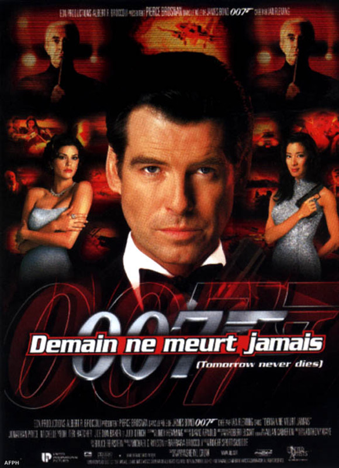
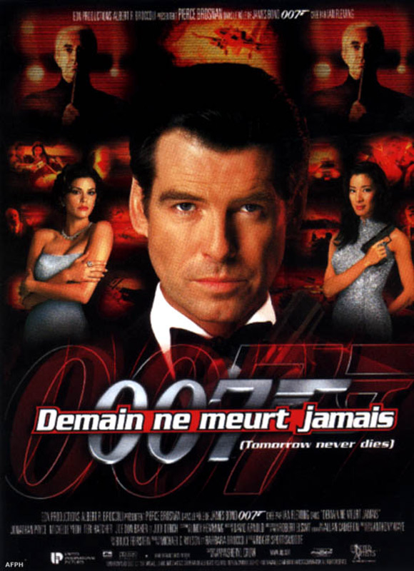

L'ère Pierce Brosnan se déroule 6 ans après la fin de la Guerre Froide.
Suite à l'échec de la période Timothy Dalton, la saga avait besoin de se remettre sur les rails et de se moderniser en s'adaptant au contexte de son époque. Etant donné que les gens étaient persuadés que James Bond est une relique de la Guerre Froide, le succès du film Goldeneye
milieu des années 90, aidé de la performance de Brosnan, permet à la franchise de renaître de ses
cendres suite à une période difficile vers la fin des années 80.De plus, l'ère Pierce Brosnan a permis à la saga de la faire découvrir à une nouvelle génération
et d'acquérir plus de fans. Tous les films avec Brosnan sont des succès commerciaux.
Sur cette page, nous vous présentons les films 007 de l'ère Pierce Brosnan.
 
